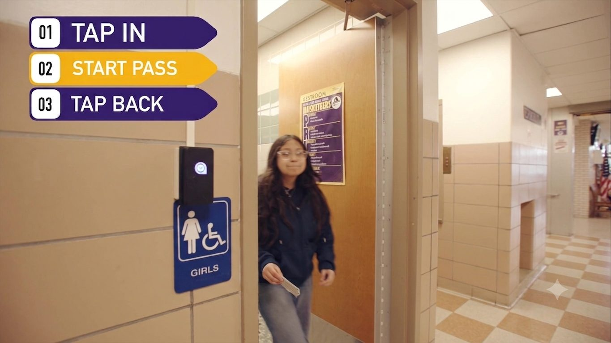

Something happens in a hallway. A fight, some vandalism, a student who got hurt. Now an administrator has to reconstruct it. Who was out of class? Where were they coming from? Who was near the spot when it happened?
Without good records, that reconstruction is a lot of guesswork and a lot of pulled-aside conversations. With MOOV, the answers are already there, because every student taps in as they move through the building.
A clear timeline, not a guessing game

Because students tap in when they enter and leave rooms, MOOV keeps a timestamped record of movement across the building. When you're writing an incident report, that record turns "we think" into "we know."
You can see who was out on a pass at the time, which room a student came from, and how long they were in the hallway. Frank Gmelin, Director of Security for the Comsewogue School District, described using exactly that kind of detail day to day:
"It also gives us the opportunity to check what room they're coming from. So if they're on the second floor and they came from the first floor, there was no reason to be on the second floor to go to the bathroom."
That's the same information that makes an incident report accurate and fair. You're documenting what actually happened, with times and locations, instead of relying on memory.
Better than documenting: preventing
The best incident report is the one you never have to write. This is where MOOV's group settings come in.
If two students shouldn't be in the hallway at the same time, MOOV can put them in a group so they can't both tap out of class at once. If one is out on a pass, the other has to wait. It's a simple rule that quietly keeps certain students apart without singling anyone out in front of the class.
For students who tend to find trouble together, or two kids who have a history, that spacing prevents the hallway run-ins that turn into incidents.